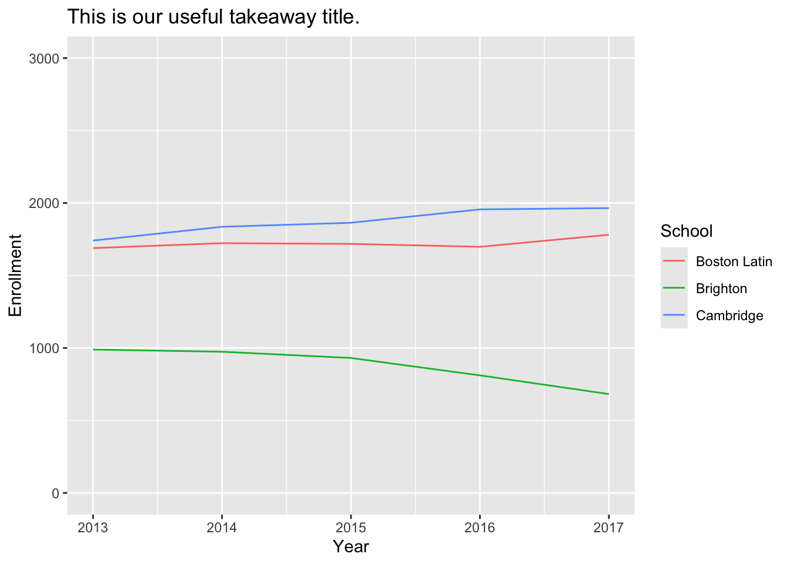

rm(list=ls())S057 Workshop: Data Vizualization with R
Setup
Clear the R environment. This removes all objects stored in your global environment.
Load packages. You may also need to install them first by running install.packages("dplyr") and install.packages("ggplot2").
library(dplyr)
library(ggplot2)Set working directory. You’ll need to customize this path for your own directory structure.
setwd("/Documents/S057")
Tip
Use RStudio Projects instead of setwd()
Workflow: Projects
Why You Should Always Use RStudio Projects
Load the data. You’ll need to customize the path for your own directory structure. If you need to download the data, you can find it here: bit.ly/s057-data.
dat <- read.csv("s057workshopdata.csv")About ggplot2
In general, making graphs/figures in R is a matter of becoming familiar with the typical figure syntax as well as how it changes for certain types of figures. When we use ggplot2, we can essentially split our figure into the following basic parts:
PLOT = DATA + AESTHETICS + GEOMETRY
DATA refers to the data frame (our data set).
AESTHETICS indicates the x and y variables. It also tells R how to display data in the plot (e.g., what colors to use, the size and shape of points, etc.).
GEOMETRY refers to the type of graphs (e.g., bar chart, histogram, box plot, line plot, etc.) to use.
Line Graphs
A line graph is really useful when you have data with a time component, or in other words, you are measuring the same things across different times. You can also use this to compare differences across time between different units. If there is a time component (years, months, etc.) try a line graph.
Example Research Question
How has high school enrollment changed over time at 3 different sites (Cambridge Rindge and Latin, Boston Latin Academy, Brighton High School)?
First,create a subset of our dataset that includes only the three schools relevant to our research question.
dat_line <- dat %>%
filter(school == 'CAMBRIDGE RINDGE AND LATIN' |
school == 'BOSTON LATIN ACADEMY' |
school == 'BRIGHTON HIGH') Recall the basic ggplot2 structure:
PLOT = DATA + AESTHETICS + GEOMETRY
Next, we’ll generate the plot. There are many ways to change the style of the graph and how the lines look, but note that lines should cover about 2/3 of the chart height. We want to clearly see where each of these lines appears relative to the y-axis. For now, let’s change the maximum bound of the y-axis to 3000 see if we prefer it.
ggplot(dat_line, aes(x = year, y = enrollment, color = school)) +
geom_line()We can also add a title to our graph, update our legend, and update our axis labels:
ggplot(dat_line, aes(x = year, y = enrollment, color = school)) +
geom_line() +
ylim(0, 3000) +
scale_color_discrete(labels = c("Boston Latin", "Brighton", "Cambridge")) + # update legend
ggtitle("This is our useful takeaway title.") + # add a title
labs(color = "School", # update our legend label
x = "Year", # update our x-axis label
y = "Enrollment") # update our y-axis label
Tip
When you use scale_color_discrete(labels = c()), R will not know how to match your labels to the data; essentially we are just “overriding” the default labels R will use. You will need to verify manually that your labels match the actual data.
Bar Graphs
A bar graph is really useful when you have data that you want to rank. Or when you have data within groups that you want to show the differences between, such as something like differences in salary between men and women. Finally, you can use a bar graph to show a distribution of a variable - that is, the range and frequency of all possible values. This is called a histogram, and we’ll talk about that separately. Basically, if there are categories and you are interested in highlighting the differences between them, try a bar graph.
Example Research Question
How does racial composition of schools differ between Cambridge and Boston public schools, on average?
First, we create a new dataset called data_bar. Then we aggregate by district and calculate percent of enrollment by race.
dat_bar <- dat %>%
group_by(district) %>%
summarize(avg_pct_black = mean(black / enrollment, na.rm = TRUE),
avg_pct_hispanic = mean(hispanic / enrollment, na.rm = TRUE),
avg_pct_asian = mean(asian / enrollment, na.rm = TRUE),
avg_pct_white = mean(white / enrollment, na.rm = TRUE))
Warning
When we run this code, get an error that we have a non-numeric argument. This is likely because R thinks our race counts by school are not numbers.
To fix the error, let’s tell R to change the “class” (i.e., type of variable) to be numeric.
dat$hispanic <- as.numeric(dat$hispanic)
dat$black <- as.numeric(dat$black)
dat$asian <- as.numeric(dat$asian)
dat$white <- as.numeric(dat$white)
dat$enrollment <- as.numeric(dat$enrollment)Now let’s try making the new dataset again:
dat_bar <- dat %>%
group_by(district) %>%
summarize(avg_pct_black = mean(black / enrollment, na.rm = TRUE),
avg_pct_hispanic = mean(hispanic / enrollment, na.rm = TRUE),
avg_pct_asian = mean(asian / enrollment, na.rm = TRUE),
avg_pct_white = mean(white / enrollment, na.rm = TRUE))To help with our chart, let’s swap our rows and columns. We’ll need the tidyr package to do this. If you already have it installed, you only need to load it from your library.
install.packages("tidyr")
library(tidyr)Now we’ll modify the dat_bar data frame to use it for the bar chart:
dat_bar <- dat_bar %>%
pivot_longer(cols = starts_with("avg"), # Select columns starting with "avg"
names_to = "race", # New column name for racial categories
values_to = "average_enrollment") # New column name for avg enrollmentNext, we’re ready to make the bar chart. Recall the basic structure we use for ggplot2:
PLOT = DATA + AESTHETICS + GEOMETRY
ggplot(dat_bar, aes(x = race, y = average_enrollment, fill = district)) +
geom_bar(stat = "identity", position = "dodge")
Tip
stat = "identity" tells R that the height of each bar is determined by the y-values in the data. The code position = "dodge" tells R that the bars within each group should be placed next to each other instead of stacking them.
Like with the line chart, we can make our plot fancier:
ggplot(dat_bar, aes(x = race, y = average_enrollment, fill = district)) +
geom_bar(stat = "identity", position = "dodge") +
scale_fill_discrete(labels = c("Boston", "Cambridge")) + #update legend labels
ggtitle("This is our useful takeaway title.") + # add a title
labs(fill = "District", #update our legend and axis labels
x = "",
y = "Average Percentage") +
scale_x_discrete(labels = c("avg_pct_black" = "Black", #change x-labels
"avg_pct_hispanic" = "Hispanic",
"avg_pct_asian" = "Asian",
"avg_pct_white" = "White"))
Tip
An important stylistic point with bar graphs is that you always want to start with a baseline (the beginning of your y-axis) at zero. Doing otherwise can lead to people misinterpreting your data.
Let’s finish by setting the y-axis baseline to start at zero by specifying the range for y:
ggplot(dat_bar, aes(x = race, y = average_enrollment, fill = district)) +
geom_bar(stat = "identity", position = "dodge") +
scale_fill_discrete(labels = c("Boston", "Cambridge")) +
ggtitle("This is our useful takeaway title.") +
labs(fill = "District",
x = "",
y = "Average Percentage") +
scale_x_discrete(labels = c("avg_pct_black" = "Black",
"avg_pct_hispanic" = "Hispanic",
"avg_pct_asian" = "Asian",
"avg_pct_white" = "White")) +
ylim(0, 0.5) # set range for yHistograms
Histograms are a special type of bar chart that allows you to visually observe the distribution of a single variable. This is especially useful for a continuous variable that has lots of observations. Say you want to understand the distribution of test scores for students in a school. In that case, a histogram would work really well.
Example Research Question
How does school size vary in BPS?
First, we’ll create a subset of our dataset that includes only the schools in boston.
dat_hist <- dat %>% filter(district == 'boston')Recall the general ggplot2 structure: > PLOT = DATA + AESTHETICS + GEOMETRY
ggplot(dat_hist, aes(x = enrollment)) +
geom_histogram(binwidth = 100)
Tip
For histograms we don’t indicate a y-variable because by definition the y-axis for a histogram will be a tally or a count.
For a histogram, a choice you are going to make is how many bins (categories) you want your histogram to have. Make sure you have enough bins to be able to see the distribution, but not too many bins that your graph gets messy. The binwidth tells stata how big to set the “buckets.” For now, let’s change the binwidth to 50 to get a little more granular.
Let’s add a title and update the labels.
ggplot(dat_hist, aes(x = enrollment)) +
geom_histogram(binwidth = 50) +
ggtitle("This is our useful takeaway title.") + # add a title
labs(x = "Enrollment", # add axis labels
y = "Count")Scatterplots
Scatterplots are similar to histograms in that they show you the distribution of a variable. However, they can be much more detailed in that they can show you each individual data point on a chart. More importantly, they allow you to add a second variable to the chart, allowing you to see its distribution, which is really useful if you are interested in knowing if two variables are related or correlated with each other in some way. A scatterplot also allows you to easily identify outliers in your data.
Example Research Question
Do white students tend to go to schools where fewer students receive free lunch?
Let’s practice making a scatterplot by looking at the relationship between white student proportion and the proportion of students who receive free lunch in Boston and Cambridge Public Schools.
First, create a new data frame based on our original dataset.
dat_scat <- dat #duplicate our datasetThen make new variables for percent white and percent free lunch.
dat_scat$pct_white <- dat_scat$white / dat_scat$enrollment
dat_scat$pct_freelunch <- dat_scat$freelunch / dat_scat$enrollmentRecall the ggplot2 structure:
PLOT = DATA + AESTHETICS + GEOMETRY
Make the basic scatterplot:
ggplot(dat_scat, aes(x = pct_white, y = pct_freelunch)) +
geom_point()Let’s add a title and make a few other updates:
ggplot(dat_scat, aes(x = pct_white, y = pct_freelunch)) +
geom_point(color = "blue", size = 1) + # make our dots blue and small
ggtitle("This is our useful takeaway title.") + #add a title
labs(x = "X-Axis Label", #update the axes
y = "Y-Axis Label")Practice on Your Own
Create a line graph that shows how black student enrollment as a proportion of total school enrollment has changed between 2013-2017.
Create a bar graph that shows the enrollment proportion by race for Cambridge High School and Boston Latin Academy.
Create a histogram that shows the distribution of the proportion of students that are Black in Boston public schools in 2017.
Create a scatterplot that shows the relationship between school size and % of students on free lunch.